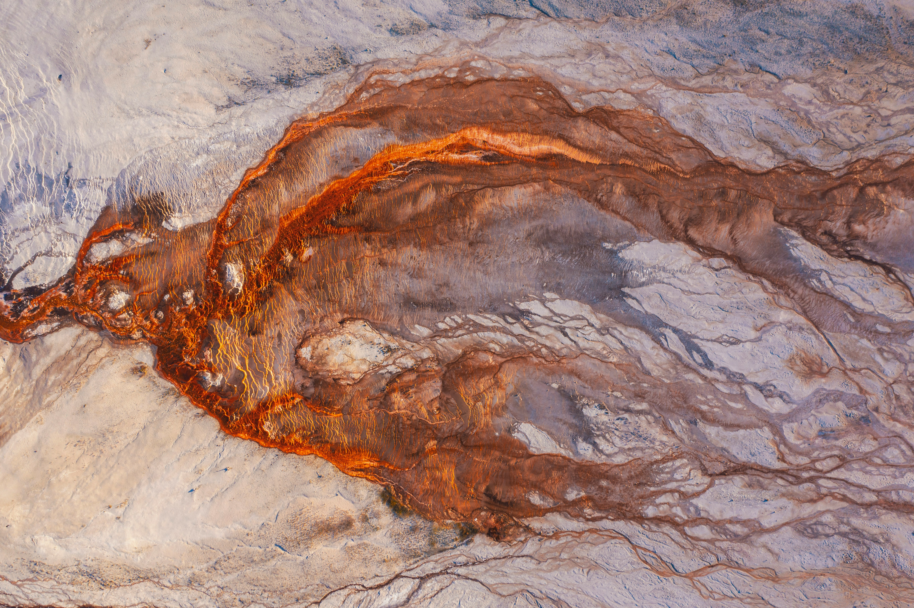

Chapter I: GIS in Earth Sciences

Geographic Information Systems (GIS)
According to the United States Geological Survey (USGS), a Geographic Information System (GIS) is “a computer system that analyzes and displays geographically referenced information. It uses data that is attached to a unique location”.
We interact everyday with GIS: through our use of GPS for driving, finding places of interest on a map, even when we write our postal address or schedule a trip. Understanding our planet and the processes that shape it requires us to use GIS at various scales, from a global perspective (modelling of our climate, tectonic processes or the distribution of species), to regional processes (volcanic eruptions, mountain ranges formation, or the evolution of drainage basins systems), to even focused, local events such as landslides, forest fires or flooding events.
Moreover, understanding how our society works is also dependent on GIS, for critical aspects such as managing how our cities are organized, understanding the amount of natural resources at our disposal, or to understand the population exposure to risk. Using GIS helps to add a spatial dimension to the socio-economic challenges faced by humanity. Geospatial data is in fact recognized by the United Nations as a useful source of information to advance towards sustainable development.
GIS Applications in Earth Sciences
Remote Sensing
Remote sensing allows Earth scientists to collect data about the planet’s surface without direct contact, using satellite or airborne sensors. Key applications include land use and land cover mapping, vegetation monitoring (e.g. NDVI), glacier retreat tracking, and urban expansion analysis.
Natural Resources Exploration
GIS plays a central role in the exploration of mineral, energy, and water resources. By integrating geological maps, geophysical surveys, and satellite imagery, scientists can identify prospective zones for mineral deposits, map aquifer extents, or assess the potential of geothermal and hydrocarbon reservoirs.
Natural Hazard Assessment and Risk Mapping
GIS enables the spatial analysis of hazard-prone areas, combining topographic, geological, and climatic data to produce risk maps. Applications include landslide susceptibility mapping, flood inundation modelling, volcanic hazard zonation, and seismic risk assessment (which are often combined with population exposure data to evaluate societal vulnerability).
Climate and Environmental Monitoring
Long-term geospatial datasets allow scientists to track environmental change over time. This includes monitoring desertification, deforestation, coastal erosion, permafrost dynamics, and the impacts of extreme weather events: all critical inputs for climate modelling and environmental policy.
Geomorphology and Landscape Analysis
Digital Elevation Models (DEMs) and terrain analysis tools allow geomorphologists to characterize landforms, derive drainage networks, compute slope and aspect, and study the evolution of landscapes over geological timescales.
Key Geospatial and Geological Data Sources
Global Earth Science Geospatial Data
Elevation & Topography
- ETOPO https://www.ncei.noaa.gov/products/etopo-global-relief-model Global relief model combining bathymetry and topography at 15 arc-second resolution.
- SRTM (Shuttle Radar Topography Mission) https://www.earthdata.nasa.gov/data/instruments/srtm Near-global digital elevation model at 30m resolution.
- GEBCO https://www.gebco.net General Bathymetric Chart of the Oceans; global ocean depth and land elevation.
Geological Maps
- OneGeology https://onegeology.org/ Global geological map data served via OGC web services, aggregated from national surveys.
- CGMW (Commission for the Geological Map of the World) https://www.ccgm.org Global and continental-scale geological maps.
- GeoMapApp https://www.geomapapp.org Interactive application for exploring global geoscience datasets.
Geophysics
- EMAG2 / WDMAM https://agupubs.onlinelibrary.wiley.com/doi/10.1029/2009gc002471 Global magnetic anomaly maps.
- CRUST1.0 https://igppweb.ucsd.edu/~gabi/crust1.html Global crustal thickness and structure model.
- ISC (International Seismological Centre) https://www.isc.ac.uk Global earthquake catalogue and seismicity data.
European Resources
- EMODNET (European Marine Observation and Data Network) https://emodnet.ec.europa.eu European marine geology, bathymetry, and seabed mapping.
- EGDI (European Geological Data Infrastructure) https://www.europe-geology.eu Pan-European geological data from national geological surveys, served via OGC services.
- EuroGeoSurveys https://www.eurogeosurveys.org Network of European geological surveys providing harmonised geospatial data.
Swiss Resources
- swisstopo https://www.swisstopo.admin.ch/en/geodata-and-applications Swiss Federal Office of Topography; high-resolution DEMs, geological maps, and OGC web services.
- Swiss Geophysical Commission (SwissGeol) https://www.swissgeol.ch National geological data portal with borehole, stratigraphy, and subsurface data.
- GeoMol https://www.geomol.eu 3D geological models of the Alpine Foreland basins, including Switzerland.
Domain-specific repositories
Palaeontology
- Paleobiology Database (PBDB) https://paleobiodb.org Global compilation of paleontological occurrence data.
Lithology & Stratigraphy
- Macrostrat https://macrostrat.org Global database of stratigraphic columns, rock units, and geological time.
- OneStratigraphy https://onestratigraphy.ddeworld.org/ Global stratigraphic database linking rock units across regions.
- Sedimentary, Geochemistry and Paleoenvironments Project (SGP) https://sgp.stanford.edu/ Global compilation of sedimentary, geochemical, and paleoenvironmental data.
Geochemistry
- EarthChem https://earthchem.org Portal for geochemical, geochronological, and petrological data.
- PetDB (Petrological Database of the Ocean Floor) https://earthchem.org/petdb Geochemical and petrological data for ocean floor rocks, a subcomponent of EarthChem.
- GEOROC (Geochemistry of Rocks of the Oceans and Continents) https://georoc.eu/georoc/ Global compilation of published analyses of igneous and metamorphic rocks.
Mineralogy
- Mindat https://www.mindat.org World’s largest mineral database with locality and occurrence data.
- Clay minerals global compilation https://doi.org/10.1038/sdata.2017.103 Global dataset of clay mineral occurrences in marine sediments.
Geochronology
- Zircon global compilation https://doi.org/10.1038/s41597-023-02902- Global compilation of detrital and igneous zircon U-Pb ages.
- EarthTime https://earthtime.org/ Initiative for improving the precision and accuracy of geochronological data.
Paleogeography
- PALEOMAP / PaleoDEMs https://doi.org/10.5281/zenodo.5460860 Palaeo-Digital Elevation Models for the Phanerozoic (Scotese & Wright, 2018).
- PANALESIS https://doi.org/10.5281/zenodo.15396265 Global quantified palaeogeographic maps for the Phanerozoic (Franziskakis et al., 2025).
- GPlates https://www.gplates.org Open-source software and associated data for plate tectonic reconstructions.
- GPlates Portal https://portal.gplates.org Web portal providing access to GPlates plate motion models and derived datasets.
Python for GIS and Geology
Here are a few open and useful resources to dive in Python programming in the geosciences.
- Tenkanen, H., Heikinheimo, V., & Whipp, D. (2025). Geo-Python. University of Helsinki. Available online https://geo-python-site.readthedocs.io/en/latest/
- Wu, Q. (2025). Introduction to GIS Programming: A Practical Python Guide to Open Source Geospatial Tools. Independently published. ISBN 979-8286979455. https://amazon.com/dp/B0FFW34LL3 Available oneline:https://gispro.gishub.org/
- Gomez, A. (2026) Python for Geologists. Available Online: https://github.com/kevinalexandr19/python_for_geologists?tab=readme-ov-file